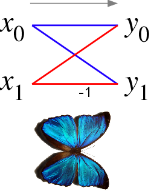
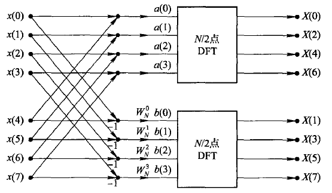
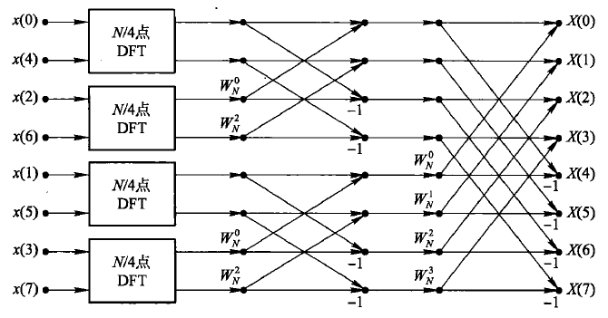
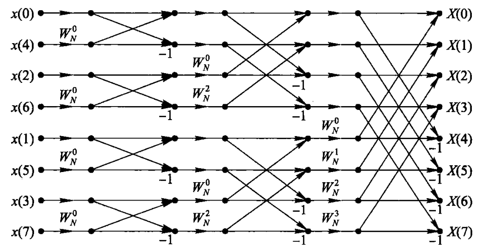
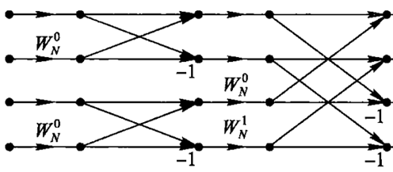
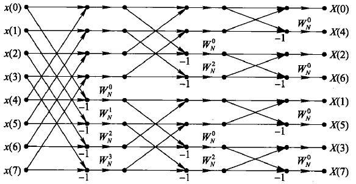
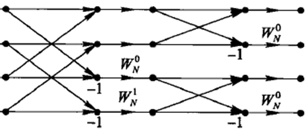

数字信号处理 期末复习
基于复习课录音与课程PPT整理 | 互动式复习指南
考试信息
第1章 离散时间信号
1.1 基本概念与典型序列
六种典型序列
| 序列 | 定义 | 说明 |
|---|---|---|
| 单位脉冲序列 | $\delta(n) = \begin{cases}1, & n=0\\0, & n\neq 0\end{cases}$ | 注意与 $\delta(t)$ 的区别 |
| 单位阶跃序列 | $u(n) = \begin{cases}1, & n\geq 0\\0, & n<0\end{cases}$ | |
| 矩形序列 | $R_N(n) = \begin{cases}1, & 0\leq n\leq N-1\\0, & \text{其他}\end{cases}$ | $N$ 为非零区间长度 |
| 实指数序列 | $x(n) = a^n u(n)$ | $|a|<1$ 收敛，$|a|>1$ 发散 |
| 正弦序列 | $x(n) = A\sin(\omega_0 n + \varphi)$ | $\omega_0$ 为数字角频率 |
| 复指数序列 | $x(n) = e^{(\sigma+j\omega_0)n}$ | 实部为余弦，虚部为正弦 |
1.2 重要公式与性质
数字角频率与模拟角频率的关系：
$$\boxed{\omega = \Omega T = \frac{2\pi f}{F_s}}$$ 其中 $\omega$ 为数字角频率，$\Omega$ 为模拟角频率，$f$ 为物理频率，$F_s$ 为采样频率。
正弦序列的周期性判断
- 若 $\frac{2\pi}{\omega_0}$ 为有理数：是周期序列
- 若 $\frac{2\pi}{\omega_0}$ 为无理数：不是周期序列
如 $\cos\left(\frac{3\pi}{7}n\right)$，则 $\frac{2\pi}{\omega_0} = \frac{2\pi}{3\pi/7} = \frac{14}{3}$，是周期序列，$N=14$。
序列的基本运算
| 运算 | 公式 |
|---|---|
| 偶部 | $x_e(n) = \frac{1}{2}[x(n) + x(-n)]$ |
| 奇部 | $x_o(n) = \frac{1}{2}[x(n) - x(-n)]$ |
| 单位脉冲表示 | 任意序列：$x(n) = \sum_{k=-\infty}^{\infty} x(k)\delta(n-k)$ |
| 线性卷积 | $y(n) = x(n)*h(n) = \sum_{k=-\infty}^{\infty} x(k)h(n-k)$ |
变换域分析
DTFT 离散时间傅里叶变换
$$X(e^{j\omega}) = \sum_{n=-\infty}^{\infty} x(n)e^{-j\omega n}$$
$$x(n) = \frac{1}{2\pi}\int_{-\pi}^{\pi} X(e^{j\omega})e^{j\omega n}d\omega$$
DTFT 重要性质
| 性质 | 时域 | 频域 |
|---|---|---|
| 线性 | $ax_1(n)+bx_2(n)$ | $aX_1(e^{j\omega})+bX_2(e^{j\omega})$ |
| 时移 | $x(n-n_0)$ | $e^{-j\omega n_0}X(e^{j\omega})$ |
| 频移 | $e^{j\omega_0 n}x(n)$ | $X(e^{j(\omega-\omega_0)})$ |
| 共轭 | $x^*(n)$ | $X^*(e^{-j\omega})$ |
| 实偶序列 | $x(n)$ 实偶 | $X(e^{j\omega})$ 实偶 |
| 实奇序列 | $x(n)$ 实奇 | $X(e^{j\omega})$ 虚奇 |
| 实序列 | $x(n)$ 实 | $X(e^{j\omega})$ 共轭偶对称 |
$$X(e^{j\omega}) = \sum_{n=0}^{\infty} a^n e^{-j\omega n} = \frac{1}{1-ae^{-j\omega}}, \quad |a|<1$$ 幅度谱：$|X(e^{j\omega})| = \frac{1}{\sqrt{1-2a\cos\omega+a^2}}$
Z 变换
$$X(z) = \sum_{n=-\infty}^{\infty} x(n)z^{-n}$$
常用 Z 变换对（必须记住！）
| 序列 $x(n)$ | $X(z)$ | 收敛域 |
|---|---|---|
| $\delta(n)$ | $1$ | 全 z 平面 |
| $a^n u(n)$（因果等比） | $\frac{1}{1-az^{-1}}$ | $|z|>|a|$（圆外） |
| $-a^n u(-n-1)$（反因果） | $\frac{1}{1-az^{-1}}$ | $|z|<|a|$（圆内） |
零极点分布图
收敛域：以原点为边界的环形区域，用阴影或文字标注。
因果序列收敛域 = 极点最大模为半径的圆外；包含无穷点。
Z 变换的性质
| 性质 | 说明 |
|---|---|
| 线性 | $a x_1(n) + b x_2(n) \leftrightarrow aX_1(z)+bX_2(z)$ |
| 时移（位移性） | $x(n-n_0) \leftrightarrow z^{-n_0}X(z)$ |
| 卷积 | $x(n)*h(n) \leftrightarrow X(z)\cdot H(z)$ |
离散时间系统
系统特性的判别
线性时不变（LTI）系统经验判别法
- $x(n)$、$y(n)$ 及其一次项（不能有平方、对数等非线性运算）
- 系数不能包含 $n$
- $x(n)$、$y(n)$ 及其移位项前面的系数不能包含 $n$
- $x(n)$、$y(n)$ 前面的系数必须为 1
稳定性与因果性
$$\sum_{n=-\infty}^{\infty} |h(n)| < \infty \quad \text{（绝对可和）}$$
$$h(n) = 0, \quad n < 0$$ 即 $h(n)$ 是右边序列。
- 因果：收敛域包含无穷（圆外）
- 稳定：收敛域包含单位圆
- 既因果又稳定：所有极点在单位圆内
系统级联与并联
| 方式 | 时域 | Z 域 | 频率响应 |
|---|---|---|---|
| 串联 | 卷积 | 相乘 | 相乘 |
| 并联 | 相加 | 相加 | 相加 |
第2章 信号的采样与重建
采样定理
要使带限信号采样后能够不失真还原，采样频率必须满足：
$$\boxed{F_s \geq 2f_{\max}}$$ 其中 $f_{\max}$ 是信号的最高频率。$2f_{\max}$ 称为奈奎斯特率。
数字信号处理系统框图
输入 → [抗混叠滤波器] → [A/D转换器] → [数字信号处理器] → [D/A转换器] → [平滑滤波器] → 输出
模拟低通 采样保持 计算机 数字转模拟 去除高频镜像
防止混叠 连续→离散 信号处理 离散→连续 平滑输出
- 抗混叠滤波器：模拟低通，滤除高于 $F_s/2$ 的频率分量
- A/D：采样 + 量化，连续信号 → 数字信号
- D/A：数字信号 → 模拟信号
- 平滑滤波器：去除 D/A 输出中的高频镜像分量
第3章 DFT 与 FFT
3.1 DFT 离散傅里叶变换
$$X(k) = \sum_{n=0}^{N-1} x(n) W_N^{kn}, \quad k=0,1,\ldots,N-1$$
$$x(n) = \frac{1}{N}\sum_{k=0}^{N-1} X(k) W_N^{-kn}, \quad n=0,1,\ldots,N-1$$
$$W_N = e^{-j\frac{2\pi}{N}}, \quad W_N^{kn} = e^{-j\frac{2\pi}{N}kn}$$ $W_N$ 以 $N$ 为周期。
矩阵运算法计算 DFT
考试时矩阵乘法的步骤不能省略，否则扣分！
DFT 的对称性
- 实偶序列 → DFT 频谱实偶
- 实奇序列 → DFT 频谱虚奇
- 实序列 → DFT 共轭偶对称
区别：DTFT 是连续的，DFT 是离散的。
3.2 循环卷积
循环卷积的列表法（必须掌握！）
- 补零：两个序列都补零到长度 $L$（如 4 点）
- 折叠：将 $x_2(m)$ 折叠得到 $x_2(-m)$——位置 0 不变，其余从尾部往前读
- 相乘求和：$x_2(-m)$ 与 $x_1(m)$ 对应项相乘求和，得到第一个值
- 循环右移：将 $x_2(-m)$ 右移一位（尾部移回头部），再与 $x_1(m)$ 对应项相乘求和
- 重复步骤 4，得到所有 $L$ 个值
当循环卷积长度 $L \geq N_1 + N_2 - 1$（$N_1, N_2$ 为两序列非零长度）时，
循环卷积可以完全代替线性卷积。
3.3 三大变换之间的关系
| 关系 | 公式/描述 |
|---|---|
| Z 变换 → DTFT | $X(e^{j\omega}) = X(z)\big|_{z=e^{j\omega}}$ 单位圆上的 Z 变换即 DTFT |
| Z 变换 → DFT | $X(k) = X(z)\big|_{z=e^{j\frac{2\pi}{N}k}}$ DFT 是 Z 变换在单位圆上等间隔取样 |
| DTFT → DFT | $X(k) = X(e^{j\omega})\big|_{\omega=\frac{2\pi k}{N}}$ DFT 是 DTFT 的等间隔采样 |
频谱分析中的三个效应
| 过程 | 效应 | 解决方法 |
|---|---|---|
| 采样 | 频谱混叠 | 加抗混叠滤波器 |
| 截短 | 频谱泄露 | 加窗函数 |
| DFT 观察 | 栅栏效应 | 增加采样点数 |
$$\Delta f = \frac{F_s}{N}$$ $N$ 为信号的有效长度。
3.4 帕塞瓦尔定理
公式不用记，只要知道物理概念即可。
FFT 快速傅里叶变换
FFT 基本概念与流图
蝶形运算基本单元

蝶形运算单元：W 系数在输入端下路，上路输出 = 两输入相加，下路输出 = 两输入相减后再乘 W 系数
8 点 FFT 分解过程
以下展示 N=8 点 FFT 如何通过逐级分解为小点数 FFT 来实现快速计算：
图 3.17：两个 4 点 FFT 组成一个 8 点 FFT

将 8 点序列按奇偶分成两组 4 点序列，分别做 FFT 后通过蝶形运算合成
图 3.18：由四个 2 点 FFT 组成 8 点 FFT

继续分解，每个 4 点 FFT 再分为两个 2 点 FFT，最终 8 点 FFT = 4 个 2 点 FFT + 蝶形合成
★ 按时间抽取的 N=8 点 FFT 完整流图
图 3.19：按时间抽取的 N=8 点 FFT 运算流图（重点！必须会画）

- 8 点 = 3 级，$N$ 点 = $\log_2 N$ 级
- 蝶形基本形状：上路输出 = 相加，下路输出 = 相减（W 系数在下路输入端）
- 各级蝶距（间隔）：第1级 = 1，第2级 = 2，第3级 = 4，…，第 $M$ 级 = $N/2$
- 输入序列：码位倒序（0, 4, 2, 6, 1, 5, 3, 7）——二进制位反转
- 输出序列：自然顺序（0, 1, 2, 3, 4, 5, 6, 7）
- 第 1 级只有一种 $W_N^0$；中间级上下对称；最后一级 $W$ 系数是等比序列 $W_N^0, W_N^1, \ldots$
- 支持原位计算：每一级运算结果覆盖原存储器，无需额外空间
N=4 按时间抽取 FFT 流图

N=4 按时间抽取：2 级运算，输入码位倒序 {0,2,1,3}，输出自然顺序 {0,1,2,3}
蝶形类型随级数变化
| 级数 | 蝶形类型数 | W 系数 | 蝶距 |
|---|---|---|---|
| 第1级 | 1 种 | $W_N^0$ | 1 |
| 第2级 | 2 种 | $W_N^0, W_N^{N/4}$（上下对称） | 2 |
| 第3级 | 4 种 | $W_N^0, W_N^1, W_N^2, W_N^3$（等比） | 4 |
序数重排（码位倒序）
输入序列按二进制码位反转重排。以 N=8 为例：
| 自然序号 | 二进制 | 反转 | 倒序号 |
|---|---|---|---|
| 0 | 000 | 000 | 0 |
| 1 | 001 | 100 | 4 |
| 2 | 010 | 010 | 2 |
| 3 | 011 | 110 | 6 |
| 4 | 100 | 001 | 1 |
| 5 | 101 | 101 | 5 |
| 6 | 110 | 011 | 3 |
| 7 | 111 | 111 | 7 |
★ 按频率抽取的 N=8 点 FFT 流图
图 3.23：按频率抽取的 N=8 点 FFT 运算流图

W 系数在输出端下路；输入自然顺序，输出码位倒序；蝶距从大到小（与时间抽取相反）
- 按频率抽取流图 = 按时间抽取流图的转置（反转信号流方向）
- 时间抽取：W 系数在输入端下路 | 频率抽取：W 系数在输出端下路
- 时间抽取：输入码位倒序，输出自然顺序 | 频率抽取：输入自然顺序，输出码位倒序
- 两者运算量完全相同
N=4 时间抽取与频率抽取对比

左：N=4 按频率抽取 | 右：N=4 按时间抽取。注意 W 系数位置和输入输出顺序的区别
直接 DFT：复乘 $N^2$，复加 $N(N-1)$
基2 FFT：复乘 $\frac{N}{2}\log_2 N$，复加 $N\log_2 N$
直接 DFT：复乘 $256^2 = 65536$
FFT：复乘 $\frac{256}{2}\log_2 256 = 128 \times 8 = 1024$
效率提升约 64 倍！
FFT 应用
快速卷积
- 对两个序列做 $L$ 点 DFT（$L \geq N_1+N_2-1$）
- 频域相乘：$Y(k) = X(k) \cdot H(k)$
- 对 $Y(k)$ 做 IDFT
- 当 DFT 换成 FFT 时，即为快速卷积
第4章 IIR 滤波器设计
4.1 模拟滤波器原型（概念题）
三种模拟滤波器对比
| 滤波器 | 幅度特性 | 阶次 | 参数灵敏度 |
|---|---|---|---|
| 巴特沃斯 | 通带阻带都单调下降，通带内最大平坦 | 最高 | 最低（最不灵敏/最佳） |
| 切比雪夫 | 通带和阻带一个等波纹一个单调 | 中等 | 中等 |
| 椭圆 | 通带和阻带都是等波纹 | 最低 | 最高（最差） |
滤波器阶次越高，过渡带越窄。
4.2 脉冲响应不变法
$$z = e^{sT} \quad \Rightarrow \quad \omega = \Omega T$$ 数字角频率 = 模拟角频率 × 采样间隔（线性关系）
缺点：有频谱混叠效应（模拟频谱的周期延拓导致）
适用：只能设计低通和带通滤波器，不能设计高通和带阻！
4.3 双线性变换法
$$\boxed{s = \frac{2}{T} \cdot \frac{1-z^{-1}}{1+z^{-1}}}$$
$$\boxed{\Omega = \frac{2}{T}\tan\frac{\omega}{2}}$$ 模拟角频率与数字角频率是非线性关系。
缺点：频率映射是非线性关系（会产生频率畸变）
已知 $F_s=4000$ Hz，设计 3dB 截止频率 $f_c$ 的巴特沃斯低通滤波器。
- 求数字频率：$\omega_c = \frac{2\pi f_c}{F_s}$
- 用频率映射公式求 $\Omega_c = \frac{2}{T}\tan\frac{\omega_c}{2}$
- 查表得到归一化 $H_a(p)$，反归一化：$p \to s/\Omega_c$
- 用双线性变换公式：$s \to \frac{2}{T}\cdot\frac{1-z^{-1}}{1+z^{-1}}$ 代入
- 通分化简得到 $H(z)$
第5章 FIR 滤波器设计
5.1 FIR 滤波器特点
- 永远稳定：极点全部在原点
- 总是因果物理可实现的
- 满足一定对称性条件下，可得到严格的线性相位
5.2 线性相位 FIR 滤波器
四类线性相位 FIR 滤波器
| 类型 | 对称性 | N | 相位函数 |
|---|---|---|---|
| 第1类 | 偶对称 | 奇数 | $-\omega\frac{N-1}{2}$ |
| 第2类 | 偶对称 | 偶数 | $-\omega\frac{N-1}{2}$ |
| 第3类 | 奇对称 | 奇数 | $-\omega\frac{N-1}{2}-\frac{\pi}{2}$ |
| 第4类 | 奇对称 | 偶数 | $-\omega\frac{N-1}{2}-\frac{\pi}{2}$ |
群延迟：$\alpha = \frac{N-1}{2}$，也是 $h(n)$ 的中心对称点。
由 $h(n)$ 求频率响应
① 先提因子 $e^{-j\omega\frac{N-1}{2}}$
② 对称项两两合并，用欧拉公式消掉实部或虚部
③ 写成幅度函数 × 相位函数的形式
对称项合并后，多出一个 $j$（虚部），提取后得到：
相位函数：$-\omega\frac{N-1}{2} - \frac{\pi}{2}$
需用 $j = e^{j\pi/2}$ 调整符号。
5.3 零点特性与滤波器类型判断
$z_i^*$（共轭）、$1/z_i$（倒数）、$1/z_i^*$（共轭倒数）
在实轴或单位圆上可能有重合。
由零点判断滤波器类型
| 零点位置 | 含义 | 滤波器类型 |
|---|---|---|
| $z=1$（低频）有零点 | 低频阻断 → 高频通过 | 高通 |
| $z=-1$（高频）有零点 | 高频阻断 → 低频通过 | 低通 |
| 两者都有零点 | 高低频都阻断 | 带通 |
| 两者都无零点 | 高低频都通过 | 带阻 |
第6章 数字信号处理系统的实现
IIR 滤波器的网络结构 必考
画流图时，$z^{-1}$ 项的系数必须为 1。若差分方程中某项系数不为 1，需分子分母同除以该系数化为标准形式。
- 上下各一条延迟链：上面对应分子（前馈），下面对应分母（反馈）
- 延迟单元数 = 分子阶次 + 分母阶次
- 箭头方向：全部向右
- 分子系数直接对应；分母系数取相反数
- 将直接 I 型的两条延迟链合并为中间一条
- 延迟单元数 = max(分子阶次, 分母阶次)（最节省延迟单元）
- 左半部分为分母（反馈），右半部分为分子（前馈）
- 反馈方向向左，前馈方向向右
- 将 $H(z)$ 分解为一阶/二阶因式相乘：$H(z) = \prod H_k(z)$
- 每个基本节用正准型结构，串联连接
- 优点：零点和极点可以单独控制调整
- 注意：各基本节顺序可调换，结构不唯一
- 将 $H(z)$ 做部分分式展开：$H(z) = \sum H_k(z)$
- 各基本节并列连接，输出相加
- 优点：极点易控制；可并行运算，速度快
- 缺点：二阶节的零点不是系统零点，零点不易控制
| 结构 | 零极点控制 | 运算速度 | 量化误差 |
|---|---|---|---|
| 直接型 | 难（系数间耦合大） | 一般 | 最大 |
| 级联型 | 零极点均可单独控制 | 一般 | 居中 |
| 并联型 | 极点可控，零点不可控 | 最快（并行） | 最小 |
FIR 滤波器的网络结构 必考画图
- 上面一条延迟链，$N$ 长序列需 $N-1$ 个延迟单元
- 每个抽头乘以对应系数 $h(0), h(1), \ldots, h(N-1)$
- 所有乘法器输出相加得 $y(n)$
将 $H(z)$ 分解为二阶因式相乘，每个二阶节用直接型画出，串联连接。
核心优势：乘法器次数可以减少近一半！
利用 $h(n)$ 的对称性（偶对称/奇对称），将对称项合并：
- 偶对称：$h(n) = h(N-1-n)$，对称项直接相加后乘一次系数
- 奇对称：$h(n) = -h(N-1-n)$，对称项先取反再合并（引入乘 $-1$）
- 中间项（若有）单独处理
| 类型 | N | 对称性 | 特征 |
|---|---|---|---|
| 第 I 类 | 奇数 | 偶对称 | 最常用 |
| 第 II 类 | 偶数 | 偶对称 | $H(\pi)=0$，不能做高通 |
| 第 III 类 | 奇数 | 奇对称 | $h(\frac{N-1}{2})=0$ |
| 第 IV 类 | 偶数 | 奇对称 | $H(0)=0$ |
- 由两部分组成：梳状滤波器 + 一阶谐振器并联
- 梳状滤波器：$H_1(z) = 1 - z^{-N}$，差分方程 $y(n) = x(n) - x(n-N)$
- 频响 $|H_1(e^{j\omega})| = 2|\sin\frac{N\omega}{2}|$（梳齿状）
- 特别适用于窄带滤波器（如雷达信号处理），可节约运算量
- 有反馈（谐振器部分是 IIR 一阶结构）
有限字长效应
| 来源 | 说明 |
|---|---|
| A/D 转换 | 采样后叠加量化噪声 |
| 系数量化 | 滤波器系数用有限位表示，改变零极点位置 |
| 运算量化 | 乘法运算引入舍入噪声（主要指乘法器） |
- 可建模为：理想采样 + 量化噪声 $e(n)$
- 舍入处理：均值 = 0，方差 $\sigma_e^2 = \frac{q^2}{12}$，其中 $q = 2^{-B}$
- $B$ = 有效尾数位数（不含符号位）
输出噪声方差公式：
其中 $h_i(n)$ 为第 $i$ 个噪声源到输出的后续子网络的单位脉冲响应。
直接型（最大） > 级联型（居中） > 并联型（最小）
原因：并联型的每个噪声源直接到输出端，不经过其他子网络放大。
$M$ = 乘法器个数。因为 FIR 滤波器的所有量化噪声直接加到输出端（非递归），只需数乘法器个数即可。
- 系数量化对滤波器的影响与字长和结构有关
- 极点位置灵敏度：各极点位置对系数偏差的敏感程度
- 极点位置灵敏度与极点间距离成反比
- 并联型/级联型灵敏度小，直接型灵敏度大
- 零输入极限环振荡：信号归零后，由于舍入引起的非线性，输出不趋于 0，而停留在某个值或在固定值间振荡
- 大信号极限环振荡（溢出振荡）：定点补码加法运算中产生溢出，大信号时引起系统振荡
综合自测
点击选项后查看答案，检验复习效果